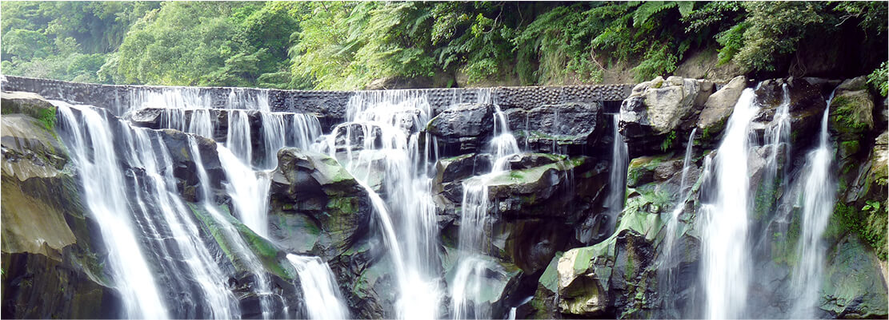

|平溪線起初是『台陽碳礦株式會社』為了運煤而興建。早年行駛平溪線的藍色兩節柴油客車，已從民國87年起停駛，改駛新款柴油復興號。在一座座煤礦相繼荒廢後，平溪線也一度面臨被廢棄的命運，所幸近年來國人鐵道旅行的風氣漸興，加上平溪天燈及礦業議題的炒熱，使平溪線再度獲得新生命。


|十分瀑布位於新北市平溪區，在平溪線鐵路大華車站與十分車站之間，屬幕簾式瀑布，瀑布下方水潭極深，瀑布就像千軍萬馬奔騰，傾瀉而下，感覺就像一襲白色綢緞，墜入一大片寬廣深潭，瀑水形成的水氣經常彌漫在瀑潭上方，經陽光照射，便呈現出一道彩虹，顯現出晴空霓虹璀燦奪目，故有彩虹淵的美名。十分瀑布因岩層的傾向與水流相反，屬於逆斜層瀑布，此情況與北美的尼加拉瀑布相似，使其贏得「臺灣尼加拉瀑布」的美譽。
|清道光年間，當地為宛如人間的仙境富足村落，當時由於山區交通不發達，官府無法管轄，遂成為山賊覬覦之地。村民為保性命，在冬至過後，即收拾家當遁入山區，直到元宵才派人回村察看，確定安全後，釋放天燈以報平安，演變而成今日的平溪天燈節。